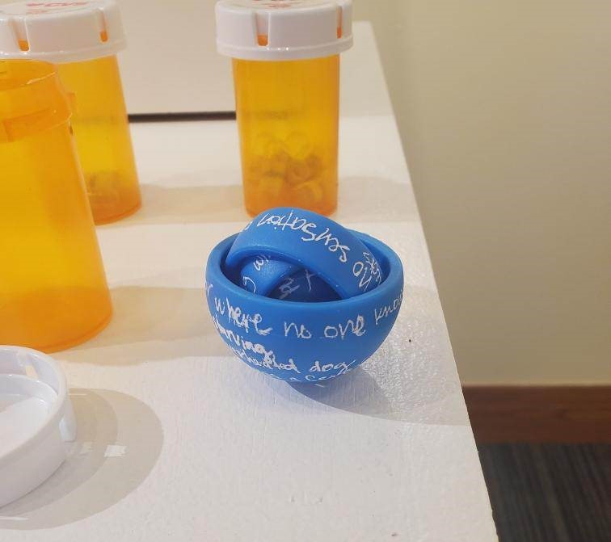
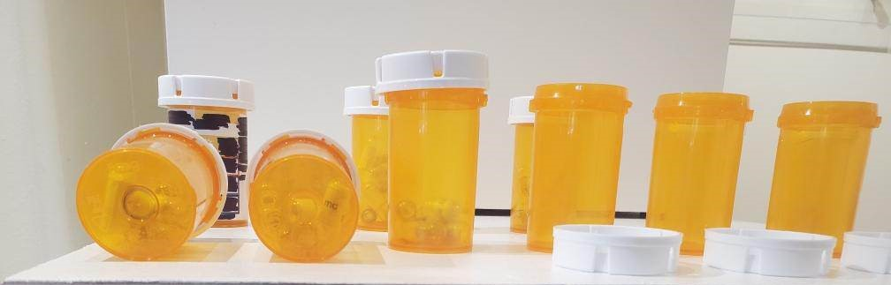

undergraduate research conference presentation
poems recited:
fun and games
vanish (no podemos)
i am now become the blue screen of death
pancake—brain—filing cabinet
a model of vertigo
undergraduate research conference visual exhibition
a model of vertigo is a blue gyroscope made of a series of rings that have the words of the poem hand-written on the layers. the gyroscope is an abstract representation of the inner ear and its moving parts.
take your meds is a collection of pill bottles with the labels peeled off. the poems have been cut into strips and hand-rolled into pill capsules. this artpiece helps to explain the frustration somebody feels at the time and patience it takes to get any noticeable results.
photographs courtesy of riley hand
other 3D elements
several of my other projects are not finished. their elements range from fabric, linocut, and sheets of transparent colored film.